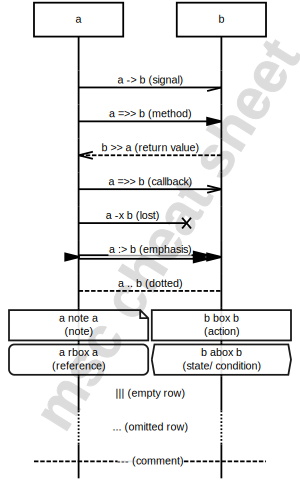

1 your text goes here ☟ select an example... simple starter (Genny) cheat sheet (Genny) showing off Mscgen sample: PKI sample: SIP sample: SIP proxy sample: SMTP sample: mscgen_js sample: ACME Challenge request sample: ACME Auth request sample: ACME Cert request sample: ACME Revoke request test: smoke test test: all arcs test: colors test: alt (xù) test: alt within a loop (xù) test: expansion - sketch (xù) test: rainbow test: multiline zoomed test: multilines in boxes test: multiline broadcasts signals! test: multiline autowrap test: auto entities (Genny) test: quoteless attributes test: double byte characters weird: skipping arcs weird: scheduling weird: flag Auto render language MscGen MsGenny AST color b&w render 2 your chart shows up here ☟ svg png jpg dot Parse error x Sample for embedding the current chart in html(learn more): x Tutorial: The MsGenny language Online interpreter The MscGen language  x About The mscgen_js javascript library transforms descriptions in MscGen, MsGenny, xù and json into sequence charts. It is the engine for this interpreter. It also makes embedding sequence charts in html easy as eating a banana. mscgen_js is open source (GPLv3). You can view, clone or fork it on GitHub and report issues there. Author When Sander first got in touch with MscGen at the end of 2012, he thought it was awesome. Annoyed he couldn't use it just everywhere, he spent his next spring holiday correcting that. Sander lives in The Netherlands and brews a wicked tea. Twitter LinkedIn Google+